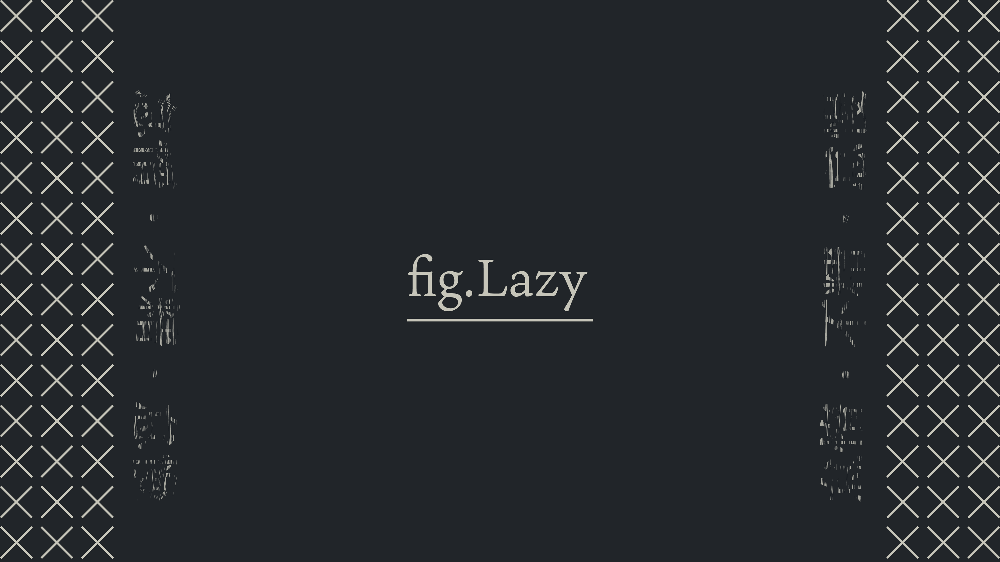

pokepureの備忘録置き場
制作してきたやつの記録を残す場所
fig.Lazy
~ 怠惰・不精・怠慢 ~

1.画像を右クリック
2.別名で画像を保存(Mac)
名前をつけて画像を保存(Windows)
トップへ
カテゴリー
制作アイワナ（公開順）
I wanna travel Do or Die
I wanna celebrate the Second anniversary ~Dear よっしー☆彡~
I wanna be the Blue coin mania saucer fulfill
I wanna recover the quality.
I wanna listen to electronic music
I wanna defeat the Surumeika
I wanna perotect one life
１時間制作アイワナ
I wanna recover the existance
I wanna travel do or die
~Into the many world~
I wanna be the rain（制作開始は2015）
I wanna cut off Ring of fates.
I wanna continue Explorer
Lament Bitterly（共同制作）_ディスメJP2用だったやつの改変
I wanna beat the Fenix
I Wanna Kill The Medley
I wanna defeat the Twitter Makers
I wanna escape from colorless world
小説
蟲の棲む処(1)
シナリオライティング
「カワっているせかい」
壁紙
fig.Lazy
fig.Oblivion
CSS